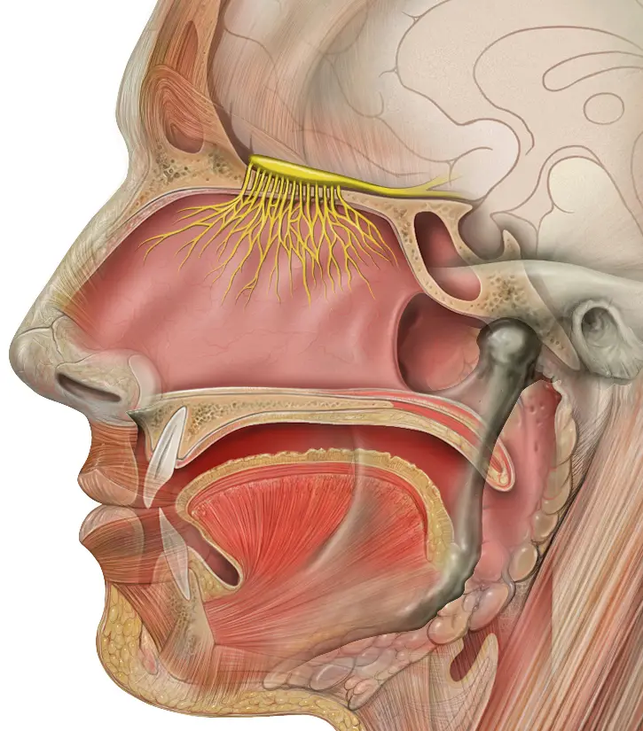
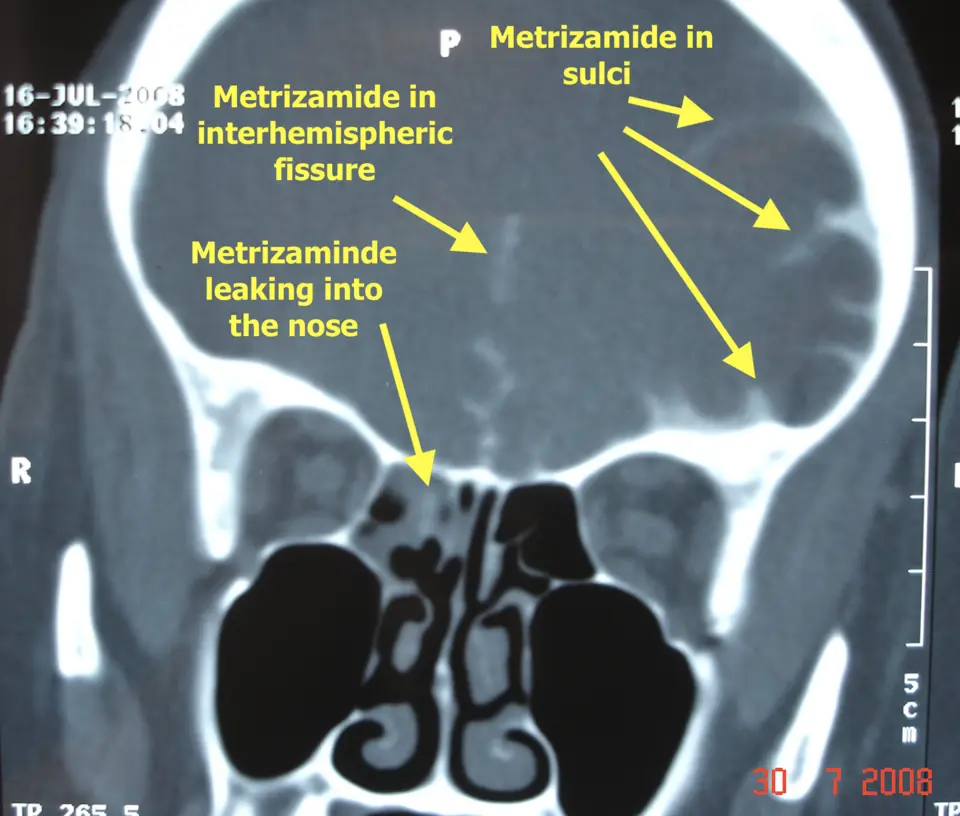

DX.9 — Fuite nasale de liquide cérébrospinal
La fuite nasale de liquide cérébrospinal (LCS) se présente comme un écoulement clair et unilatéral, le plus souvent après un traumatisme craniofacial, et expose à la méningiteS1. Le médecin la prouve par la biologie, puis la localise par l’imagerieS1S3. Il fait vacciner contre le pneumocoque selon l’Office fédéral de la santé publique (OFSP) et confie la fermeture à l’équipe de la base du crâneS2S1. Il prescrit selon l’information professionnelle suisse (AIPS) et recherche une hypertension intracrânienne idiopathique (HII) devant toute fuite spontanéeS1.
Le cours DX.9 repose sur les sources citées et n’a pas été validé cliniquement par un médecin.
1. Définition
La fuite nasale de liquide cérébrospinal (LCS), ou rhinorrhée cérébrospinale, correspond à une communication anormale entre l’espace sous-arachnoïdien et la fosse nasaleS1.
Cette fistule exige une brèche simultanée de la dure-mère, de l’os de la base du crâne et de la muqueuse nasaleS1.
2. Épidémiologie (Suisse, puis Europe)
En Suisse, l’Office fédéral de la santé publique (OFSP) compte la fistule cérébro-spinale et la fracture de la base du crâne parmi les risques justifiant la vaccination antipneumococciqueS2.
Le plan de vaccination suisse 2026 ne chiffre toutefois pas la fréquence de ces fistules, si bien que les données de fréquence viennent ici d’EuropeS2S1.
Une revue britannique de 2025 désigne le traumatisme craniofacial comme la cause la plus fréquente, puisque les fractures de l’étage antérieur représentent près de 25 % des fractures du crâneS1.
Les fuites spontanées progressent surtout chez les femmes des régions où l’obésité augmente, ce qui les relie à l’hypertension intracrânienne idiopathique (HII)S1.
La fenêtre sièges, causes et terrain en chiffres rassemble les fréquences utiles au raisonnement et justifie le rang 9 de la liste.
Sièges, causes et terrain en chiffres
| Donnée | Valeur | Portée pratique | Source |
|---|---|---|---|
| Statut en Suisse | Groupe à risque de pneumococcie, vacciné dès que l’indication est posée | Toute fistule confirmée déclenche la vaccination. | S2 |
| Part des fractures de l’étage antérieur | Près de 25 % des fractures du crâne | Le traumatisé crânien doit être interrogé sur un écoulement clair. | S1 |
| Siège post-traumatique : ethmoïde et lame criblée | 46 % | L’écoulement apparaît au plafond de la fosse nasale. | S1 |
| Siège post-traumatique : sinus frontal | 44 % | La fracture frontale impose la même vigilance. | S1 |
| Siège post-traumatique : toit de l’orbite | 15 % | Une fracture orbitaire peut aussi s’accompagner d’une fuite. | S1 |
| Siège post-traumatique : sinus sphénoïdal | 11 % | Le liquide s’écoule alors souvent vers le pharynx. | S1 |
| Siège spontané : sinus sphénoïdal | 30 % | Le sphénoïde domine les brèches liées à l’HII. | S1 |
| Siège spontané : sinus ethmoïdal | 17 % | L’imagerie doit explorer tout l’étage antérieur. | S1 |
| Siège spontané : lame criblée | 16 % | Les défauts multiples restent fréquents. | S1 |
| Terrain des fuites spontanées | Femmes d’âge moyen en surpoids | Le médecin cherche une HII chez ce profil. | S1 |
| Rang dans la liste du lot | Rang 9 de fréquence, rang E2 de gravité | La rareté n’autorise aucun retard, car la méningite menace. | S1 |
3. Physiopathologie
Les plexus choroïdes produisent le LCS à environ 0,35 ml par minute, soit 350 à 500 ml par jour, pour un volume total moyen de 140 ml chez l’adulteS1.
Ce volume se renouvelle environ trois fois par jour ; une petite brèche peut donc entretenir un écoulement prolongé sans épuiser le liquideS1.
Dans l’HII, la pression intracrânienne élevée et les pulsations de la dure-mère amincissent l’os de la base, puis forment des méningocèles ou des méningo-encéphalocèlesS1.
La communication ouvre surtout la voie aux germes du nez, ce qui explique la méningite, l’abcès épidural, la pneumocéphalie, les convulsions et l’hydrocéphalieS1.
La fenêtre base du crâne et toit de la fosse nasale localise la lame criblée, et la fenêtre causes et mécanismes classe les étiologies.
Base du crâne et toit de la fosse nasale
Lame criblée, bulbe olfactif et fosse nasale : L’illustrateur médical Patrick Lynch a dessiné cette coupe sagittale en couleurs, publiée sous licence CC BY 2.5S6.

Le lecteur cherche d’abord le bulbe jaune posé sur une fine lame osseuse, puis la cavité nasale rose qui s’étend dessous.
- 1. Le repère 1 montre le bulbe olfactif posé sur la lame criblée, siège de 46 % des fuites post-traumatiquesS6S1.
- 2. Le repère 2 montre les filets olfactifs qui traversent la lame et gagnent le toit de la fosse nasale, où le liquide apparaîtS6S1.
- 3. Le repère 3 montre le sinus sphénoïdal, siège de 30 % des brèches spontanées liées à l’HIIS6S1.
- 4. Le repère 4 montre le nasopharynx, où un liquide venu du sphénoïde peut s’écouler en arrière vers la gorgeS6.
Ce que l’image décide. La finesse de la lame criblée explique qu’un choc frontal ou une chirurgie endonasale ouvre une communication directe entre méninges et nezS1.

Causes et mécanismes
| Cause | Mécanisme | Évolution spontanée | Conséquence pour la conduite | Source |
|---|---|---|---|---|
| Traumatisme craniofacial accidentel | Fracture de l’étage antérieur avec déchirure de la dure-mère | Fermeture spontanée probable | Le traitement commence par des mesures conservatrices. | S1 |
| Traumatisme chirurgical (iatrogène) | Brèche créée pendant une chirurgie endonasale ou de la base du crâne | Fermeture spontanée peu probable | La réparation chirurgicale suit rapidement. | S1 |
| Fuite spontanée | Amincissement osseux sous l’effet d’une pression intracrânienne élevée, souvent une HII | Persistance habituelle | La chirurgie s’impose, avec traitement de l’HII. | S1 |
| Pathologie intracrânienne | Lésion qui érode ou repousse la base du crâne | Variable | L’anamnèse recherche cette cause avant toute réparation. | S1 |
| Présentation tardive après traumatisme | Brèche persistante ou réouverte | Fermeture spontanée improbable | La réparation chirurgicale devient le traitement principal. | S1 |
L’HII touche surtout des femmes d’âge moyen obèses, avec des signes d’hypertension intracrânienne sans hydrocéphalie, sans masse et avec un LCS de composition normaleS1.
La fuite agit comme une soupape de décompression ; les symptômes de l’HII peuvent donc n’apparaître qu’après la réparation de la brècheS1.
4. Démarche diagnostique
La démarche suit quatre temps : soupçonner la fuite, la confirmer par la biologie, localiser la brèche par l’imagerie, puis rechercher une HII chez les formes spontanéesS1.
Le soupçon naît d’un écoulement clair, aqueux et unilatéral, surtout après un traumatisme, une chirurgie endonasale ou un épisode de méningiteS1.
La confirmation exige l’analyse du liquide nasal, car seule la bêta-2-transferrine ou la protéine bêta-trace prouve qu’il s’agit de LCSS1S3.
La fenêtre démarche en cinq étapes ordonne les décisions, et la fenêtre diagnostics différentiels discriminants sépare le DX.9 des autres écoulements.
Démarche diagnostique en cinq étapes
| Étape | Question | Élément décisif | Conduite | Source |
|---|---|---|---|---|
| 1. Soupçonner | L’écoulement est-il clair, aqueux, unilatéral et positionnel ? | Aggravation à l’effort de poussée ou au changement de position | Le médecin recueille le liquide et adresse à l’oto-rhino-laryngologiste (ORL). | S1 |
| 2. Exclure l’urgence | Existe-t-il fièvre, raideur de nuque, photophobie ou signe neurologique ? | Signes de méningite | Le médecin adresse immédiatement en urgence. | S1S4S5 |
| 3. Confirmer | Le liquide contient-il un marqueur du LCS ? | Bêta-2-transferrine ou protéine bêta-trace positive | Le médecin retient la fistule et organise l’imagerie. | S1S3 |
| 4. Localiser | Où siège la brèche ? | Défaut osseux au scanner haute résolution, fistule à l’imagerie par résonance magnétique (IRM) pondérée T2 (temps de relaxation transversale) | L’équipe de la base du crâne planifie la réparation. | S1 |
| 5. Chercher la cause | La fuite est-elle traumatique, iatrogène ou spontanée ? | Profil d’HII : femme d’âge moyen obèse, céphalées, troubles visuels | Le médecin demande un bilan ophtalmologique et neurologique. | S1 |
L’ordre biologie puis imagerie évite des examens irradiants ou invasifs inutiles, car l’imagerie ne sert qu’à localiser une fuite déjà prouvéeS1.
Diagnostics différentiels discriminants
| Diagnostic | Élément qui le distingue du DX.9 | Piège | Conduite | Source |
|---|---|---|---|---|
| DX.1 Rhinite virale aiguë | Écoulement bilatéral et contexte de rhume | Une rhinorrhée claire unilatérale persistante ne doit pas passer pour un rhume. | Le médecin recueille le liquide si l’écoulement reste unilatéral. | S4S1 |
| DX.2 Rhinite allergique | Éternuements, prurit, symptômes bilatéraux et saisonniers | L’écoulement aqueux est commun aux deux diagnostics. | Le médecin interroge sur le côté et sur un traumatisme. | S4 |
| DX.3 Rhinite non allergique | Écoulement bilatéral déclenché par des irritants | L’écoulement provoqué en se penchant évoque plutôt une fuite. | Le médecin cherche le signe du réservoir. | S1 |
| DX.4 et DX.5 Rhinosinusites aiguës | Écoulement épais, douleur faciale, contexte infectieux | Une méningite après une « sinusite » doit faire chercher une brèche. | Le médecin interroge sur les épisodes de méningite. | S1 |
| DX.8 Corps étranger nasal | Écoulement unilatéral purulent et malodorant, souvent chez l’enfant | L’écoulement unilatéral réunit les deux diagnostics. | L’endoscopie tranche. | S1S5 |
| DX.10 Tumeur maligne nasosinusienne | Saignement, croûtes, obstruction unilatérale | Une lésion de la base peut aussi provoquer une fuite. | Le médecin adresse à l’ORL pour endoscopie et imagerie. | S4S1 |
| Écoulement d’origine otologique | Liquide parvenu au nez par la trompe auditive | La source se trouve dans l’oreille et non dans l’étage antérieur. | L’ORL examine les oreilles et les trompes. | S1 |
5. Anamnèse ciblée et drapeaux rouges
L’interrogatoire précise la consistance, le côté, la durée, le mode de début et les facteurs déclenchants de l’écoulement, notamment la poussée et la postureS1.
Il recherche ensuite un traumatisme crânien, une chirurgie nasosinusienne, une pathologie intracrânienne et tout épisode antérieur de méningiteS1.
Le médecin interroge aussi sur les signes d’hypertension intracrânienne, tout en sachant qu’une fuite active donne parfois l’inverse, une céphalée orthostatique d’hypotensionS1.
La fenêtre questions ciblées et leur raison liste les questions, et la fenêtre drapeaux rouges et action immédiate fixe la réponse aux alertes.
Questions ciblées et leur raison
| Question | Réponse évocatrice | Raison | Source |
|---|---|---|---|
| Le liquide est-il clair et fluide comme de l’eau ? | Oui, limpide et aqueux | La présentation typique reste un écoulement clair et aqueux. | S1 |
| Coule-t-il d’un seul côté ? | Oui, toujours du même côté | L’écoulement unilatéral oriente vers une brèche. | S1 |
| Coule-t-il quand vous vous penchez ou poussez ? | Oui | L’effort de poussée et la posture favorisent la fuite. | S1 |
| Avez-vous subi un choc à la tête ou au visage ? | Oui, parfois des semaines auparavant | Le traumatisme craniofacial reste la première cause. | S1 |
| Avez-vous été opéré du nez, des sinus ou de la base du crâne ? | Oui | La brèche iatrogène ne se ferme guère seule. | S1 |
| Avez-vous déjà eu une méningite ? | Oui | Une méningite, surtout répétée, révèle parfois la brèche. | S1 |
| Avez-vous mal à la tête surtout debout ? | Oui, céphalée orthostatique | Une fuite active peut abaisser la pression intracrânienne. | S1 |
| Votre vue se brouille-t-elle par moments ? | Oui, éclipses visuelles ou vision floue | Ces signes évoquent une HII. | S1 |
| Entendez-vous un souffle pulsatile dans l’oreille ? | Oui | L’acouphène pulsatile fait partie des symptômes de l’HII. | S1 |
| Voyez-vous double ? | Oui | La diplopie compte parmi les symptômes de l’HII. | S1 |
| Ronflez-vous avec des pauses respiratoires ? Avez-vous une hypertension artérielle ? | Oui | L’apnée obstructive du sommeil et l’hypertension accompagnent souvent l’HII. | S1 |
| Avez-vous pris du poids récemment ? | Oui | L’obésité relie la fuite spontanée à l’HII. | S1 |
Drapeaux rouges et action immédiate
| Drapeau rouge | Complication redoutée | Action | Source |
|---|---|---|---|
| Fièvre, raideur de nuque, photophobie | Méningite bactérienne ascendante | Le médecin adresse immédiatement en urgence. | S1S5S4 |
| Signes de septicémie | Sepsis d’origine méningée | Le médecin organise un transport urgent. | S5S4 |
| Convulsion | Complication intracrânienne | Le médecin appelle les secours et adresse en urgence. | S1 |
| Céphalée brutale et troubles de la conscience après un traumatisme | Pneumocéphalie ou abcès épidural | Le médecin adresse immédiatement pour imagerie. | S1 |
| Signes neurologiques focaux | Complication intracrânienne | Le médecin adresse immédiatement. | S4S1 |
| Baisse visuelle, diplopie, éclipses visuelles | Atteinte visuelle de l’HII | Le médecin demande un examen ophtalmologique urgent. | S1 |
| Écoulement clair après chirurgie endonasale | Brèche iatrogène | Le médecin recontacte sans délai l’équipe opératoire. | S1 |
6. Examen physique ciblé, région par région
Un examen ORL complet reste indispensable, et la nasofibroscopie permet de voir directement le liquide sortir de la brècheS1.
Les fenêtres nez, liquide recueilli, oreilles, yeux, système nerveux et état général décrivent chacune le geste, le résultat évocateur et sa conséquence.
Nez : endoscopie et manœuvres
| Geste | Résultat évocateur | Conséquence | Source |
|---|---|---|---|
| Nasofibroscopie | Liquide clair qui s’écoule du toit ou de la région sphénoïdale | Elle visualise directement la fuite. | S1 |
| Signe du réservoir | Le patient allongé s’assied, se penche en avant et fléchit le cou : un flot de liquide apparaît | Le geste provoque une fuite discrète. | S1 |
| Comparaison des deux côtés | Écoulement d’un seul côté | Il oriente le côté de la brèche. | S1 |
| Recherche d’une masse | Méningocèle ou méningo-encéphalocèle visible | Elle révèle une brèche spontanée. | S1 |
Liquide recueilli
| Geste | Résultat évocateur | Conséquence | Source |
|---|---|---|---|
| Dépôt sur papier filtre | Signe du halo : anneau central de sang entouré d’un anneau clair | Il suggère la présence de LCS dans un écoulement traumatique. | S1 |
| Recueil dans un tube sec | Liquide limpide | Il permet le dosage de la bêta-2-transferrine ou de la bêta-trace. | S1S3 |
Yeux : examen neuro-ophtalmologique
Système nerveux et méninges
État général et constantes
| Geste | Résultat évocateur | Conséquence | Source |
|---|---|---|---|
| Pression artérielle | Hypertension | Devant un œdème papillaire, elle exclut d’abord une hypertension maligne. | S1 |
| Poids, taille et indice de masse corporelle (IMC) | IMC supérieur à 30 kg/m² | Il oriente vers une HII et vers la réduction pondérale. | S1 |
| Température | Fièvre | Elle fait craindre une méningite. | S1S5 |
7. Approche syndromique
Le DX.9 associe un syndrome de rhinorrhée claire unilatérale à un éventuel syndrome méningé, à un syndrome d’hypotension ou à un syndrome d’hypertension intracrânienneS1.
La fenêtre syndromes et orientation associe chaque ensemble de signes à la décision correspondante.
Syndromes et orientation
| Syndrome | Signes | Orientation | Source |
|---|---|---|---|
| Rhinorrhée claire unilatérale | Liquide aqueux, positionnel, d’un seul côté | Suspicion de fistule : dosage d’un marqueur du LCS | S1 |
| Syndrome méningé | Fièvre, raideur de nuque, photophobie | Méningite ascendante : urgence | S1S5 |
| Syndrome d’hypotension intracrânienne | Céphalée orthostatique, raideur de nuque | Fuite active à fort débit | S1 |
| Syndrome d’hypertension intracrânienne | Céphalées, éclipses visuelles, diplopie, acouphène pulsatile, œdème papillaire | HII : bilan neuro-ophtalmologique | S1 |
| Syndrome post-traumatique | Fracture de l’étage antérieur, écoulement clair | Fuite traumatique accidentelle : traitement conservateur d’abord | S1 |
8. Diagnostic positif et critères
Le diagnostic positif repose sur la preuve biologique du LCS dans le liquide nasal, puis sur la localisation de la brèche par l’imagerieS1.
Chez la fuite spontanée, le diagnostic d’HII suit les critères de Friedman modifiés et retient une pression d’ouverture supérieure à 25 cm de LCSS1.
La fenêtre critères : ce qui suffit et ce qui ne suffit pas sépare la preuve des simples arguments.
Critères : ce qui suffit et ce qui ne suffit pas
| Élément | Valeur | Ce qui ne suffit pas | Source |
|---|---|---|---|
| Bêta-2-transferrine dans le liquide nasal | Preuve du LCS | Un liquide clair à l’inspection | S1 |
| Protéine bêta-trace dans le liquide nasal | Preuve du LCS ; dans le LCS, la valeur dépasse 6 mg/L | Une sécrétion nasale normale, inférieure à 1 mg/L | S1S3 |
| Signe du halo | Argument dans un écoulement traumatique | Il ne remplace pas le dosage | S1 |
| Défaut osseux au scanner | Localisation de la brèche | Un défaut sans preuve biologique | S1 |
| Pression d’ouverture lombaire | Supérieure à 25 cm de LCS pour l’HII | Une pression normale pendant une fuite active, qui peut masquer l’HII | S1 |
Pendant une fuite active, la pression élevée peut ne pas apparaître ; le diagnostic d’HII se pose alors souvent après coup, sur un fort soupçon cliniqueS1.
9. Examens complémentaires
La biologie précède l’imagerie : le dosage de la bêta-2-transferrine ou de la protéine bêta-trace confirme le LCS avant tout examen de localisationS1S3.
Le scanner haute résolution de la base du crâne et des sinus reste ensuite l’imagerie initiale, car il montre finement l’anatomie osseuseS1.
Si le défaut osseux reste invisible, l’IRM fortement pondérée T2 avec suppression de graisse recherche la fistuleS1.
La fenêtre examens ciblés : indication, seuil, interprétation, conduite, la fenêtre interprétation chiffrée et la fenêtre cisterno-scanner détaillent chaque examen.
Aucune société savante suisse lue ne publie de recommandation propre à ce bilan ; les seuils proviennent donc de sources européennes, britannique et autrichienneS1S3.
Examens ciblés : indication, seuil, interprétation, conduite
| Examen | Indication | Seuil ou résultat | Interprétation | Conduite | Source |
|---|---|---|---|---|---|
| Bêta-2-transferrine du liquide nasal | Tout écoulement suspect | Présence | Elle confirme le LCS. | Le médecin organise l’imagerie de localisation. | S1 |
| Protéine bêta-trace du liquide nasal | Tout écoulement suspect | Plus de 6 mg/L dans le LCS ; moins de 1 mg/L dans la sécrétion nasale | Une valeur proche de celle du LCS prouve la fistule. | Le médecin organise l’imagerie. | S1S3 |
| Scanner haute résolution de la base et des sinus | Fistule confirmée | Défaut osseux | Il localise la brèche. | L’équipe planifie la réparation. | S1 |
| IRM pondérée T2 avec suppression de graisse et séquence de liquide atténué | Défaut invisible au scanner, fuite spontanée ou HII | Fistule ou méningocèle | Elle complète le scanner et détecte des défauts multiples. | L’équipe combine les deux examens. | S1 |
| Cisterno-scanner après injection intrathécale | Fuite active non localisée par les examens non invasifs | Passage du contraste dans le nez | Il donne la localisation la plus définitive. | Le chirurgien cible la brèche. | S1S7 |
| Fluorescéine intrathécale | Repérage peropératoire | Liquide coloré au site de la brèche | Elle aide à trouver la fistule pendant l’intervention. | Usage hors autorisation, avec de rares complications neurologiques graves. | S1 |
| Examen ophtalmologique | Fuite spontanée ou suspicion d’HII | Œdème papillaire, fonction visuelle | Il oriente vers l’HII. | Le médecin mesure la pression artérielle puis demande une veinographie par IRM urgente. | S1 |
| Veinographie par IRM | Œdème papillaire | Sténose du sinus transverse | Elle constitue le signe d’imagerie le plus sensible de l’HII. | Le neurologue poursuit le bilan. | S1 |
| Ponction lombaire | Après exclusion d’hydrocéphalie, de masse et de lésion vasculaire | Pression d’ouverture supérieure à 25 cm de LCS ; composition normale | Elle soutient le diagnostic d’HII. | Le neurologue débute le traitement de l’HII. | S1 |
Interprétation chiffrée
| Mesure | Valeur du LCS | Valeur de la sécrétion nasale ou du sang | Lecture | Source |
|---|---|---|---|---|
| Protéine bêta-trace | Plus de 6 mg/L | Moins de 1 mg/L dans la sécrétion nasale | Une valeur élevée dans le liquide nasal signe le LCS. | S3 |
| Rapport LCS sur sang de la bêta-trace | Environ 30 fois plus concentrée dans le LCS | — | Le marqueur distingue nettement les deux liquides. | S3 |
| Protéines totales | Très basses, moins de 0,4 g/L | — | Un argument d’appoint, moins spécifique. | S3 |
| Glucose | Plus élevé, de 50 à 140 mg/dL | — | Un argument d’appoint, moins spécifique. | S3 |
| Débit de production du LCS | 0,35 ml par minute, soit 350 à 500 ml par jour | — | Une fuite peut durer longtemps sans tarir. | S1 |
| Pression d’ouverture lombaire | Plus de 25 cm de LCS | — | Elle soutient le diagnostic d’HII. | S1 |
Cisterno-scanner : passage du contraste dans le nez
Cisterno-scanner coronal d’une rhinorrhée cérébrospinale : Walid Maani publie ce cliché réel sous licence CC BY-SA 4.0 ; le scanner reste en niveaux de gris, à la différence des planches anatomiquesS7.

Le lecteur cherche d’abord le contraste blanc dans les espaces du LCS, puis la zone où il franchit le plancher crânien.
- 1. Le repère 1 montre le point où le contraste franchit le toit ethmoïdal et la lame criblée vers la fosse nasaleS7S1.
- 2. Le repère 2 montre le contraste présent dans les cellules ethmoïdales, preuve que le LCS gagne le nezS7.
- 3. Le repère 3 montre le sinus maxillaire rempli d’air, qui sert de repère de comparaisonS7.
- 4. Le repère 4 montre le contraste dans la scissure interhémisphérique, qui confirme la bonne diffusion intrathécaleS7.
Ce que l’image décide. Ce cliché localise la brèche lorsque le scanner simple et l’IRM n’ont rien montré, ce qui guide directement la réparation endoscopiqueS1S7.

10. Arbre décisionnel
L’arbre ci-dessous suit l’algorithme de la revue de 2025, qui sépare les fuites aiguës traumatiques des fuites tardives ou non traumatiquesS1.
La fenêtre arbre décisionnel en tableau pose une seule question par ligne.
Arbre décisionnel en tableau
| Question | Si oui | Si non | Source |
|---|---|---|---|
| 1. Fièvre, raideur de nuque, signe neurologique ou sepsis ? | Urgence hospitalière immédiate. | Passer à la question 2. | S1S5S4 |
| 2. Le liquide nasal contient-il de la bêta-2-transferrine ou de la bêta-trace ? | Fistule confirmée ; vacciner contre le pneumocoque et passer à la question 3. | Chercher une rhinite ou une autre cause. | S1S3S2 |
| 3. Le scanner haute résolution montre-t-il le défaut osseux ? | Passer à la question 5. | Passer à la question 4. | S1 |
| 4. L’IRM pondérée T2 localise-t-elle la fistule ? | Passer à la question 5. | Cisterno-scanner si la fuite reste active. | S1 |
| 5. La fuite est-elle aiguë et due à un traumatisme accidentel ? | Traitement conservateur 3 jours, puis dérivation du LCS 3 jours, puis chirurgie si la fuite persiste au-delà de 7 jours. | Passer à la question 6. | S1 |
| 6. La fuite est-elle iatrogène, tardive ou spontanée ? | Réparation endoscopique. | — | S1 |
| 7. La fuite est-elle spontanée ? | Rechercher une HII avant et après la réparation. | Suivi ORL simple. | S1 |
11. Prise en charge selon les recommandations suisses
11.A But
Le traitement vise à prévenir la méningite, à fermer la brèche de façon étanche et à traiter la cause, surtout une HII, afin d’éviter la récidiveS1.
La prise en charge reste pluridisciplinaire et réunit chirurgiens de la base du crâne, ORL et neurochirurgiens, ophtalmologues, neurologues et radiologuesS1.
11.B Moyens
Dès que le diagnostic est posé, la vaccination contre les germes courants prévient la méningite ascendante ; en Suisse, l’OFSP vaccine contre le pneumocoque dès l’indication poséeS1S2.
La conduite dépend ensuite du caractère aigu ou chronique et de la cause, comme le montrent les fenêtres fuite traumatique aiguë, chronologie et réparation chirurgicale.
Les fenêtres vaccination selon l’âge, traitement de l’HII, médicaments à éviter et grossesse, allaitement, enfant complètent le plan ; les fiches Capvaxive®, Prevenar 20® et acétazolamide résument les AIPSS2AIPS 69781AIPS 69222AIPS 21191.
Fuite traumatique aiguë : traitement structuré et chronologie
| Moment | Moyen | Modalité | Contrôle | Critère d’échec et suite | Source |
|---|---|---|---|---|---|
| Diagnostic | Vaccination antipneumococcique | Dès que l’indication est posée | Statut vaccinal noté au dossier | Aucun échec propre ; la vaccination ne remplace pas la fermeture. | S2S1 |
| Jours 1 à 3 | Mesures conservatrices | Repos au lit, tête surélevée à 30 degrés, éviter les efforts de poussée, laxatifs | Persistance de l’écoulement | Fuite persistante : dérivation du LCS. | S1 |
| Jours 4 à 6 | Drainage lombaire | Dérivation temporaire du LCS | Arrêt ou persistance de la fuite | Fuite persistante au-delà de 7 jours : chirurgie. | S1 |
| Au-delà de 7 jours | Réparation chirurgicale | Voie endoscopique endonasale | Étanchéité peropératoire | Récidive : reprise chirurgicale et recherche d’HII. | S1 |
| Toute la période | Antibioprophylaxie | Non recommandée dans ce groupe | — | Elle ne réduit pas significativement le risque infectieux. | S1 |
Une brèche iatrogène fait exception à cette chronologie, car elle se ferme rarement seule et justifie une réparation rapideS1.
Réparation chirurgicale : technique, réussite et suites
| Élément | Contenu | Raison | Source |
|---|---|---|---|
| Indication | Fuite traumatique tardive, fuite iatrogène, toute fuite non traumatique | Ces fuites se ferment rarement seules. | S1 |
| Voie | Endoscopie endonasale, introduite en 1981 | Elle a remplacé la craniotomie grâce à une morbidité moindre. | S1 |
| Réussite | Plus de 90 % | L’endoscopie est devenue le traitement de référence. | S1 |
| Préparation du site | Ablation circulaire de la muqueuse autour du défaut | Elle expose l’os pour la fermeture. | S1 |
| Méningocèle | Réduction à la pince bipolaire jusqu’au niveau de la base du crâne | Les vaisseaux cérébraux herniés sont repoussés pour éviter un infarctus. | S1 |
| Petit défaut | Fermeture en une couche par greffon | Elle suffit souvent. | S1 |
| Grand défaut ou fort débit | Reconstruction multicouche avec lambeau vascularisé | Le lambeau nasoseptal, décrit en 2006, est devenu la référence. | S1 |
| Surcorrection | Greffon plus large que le défaut | La muqueuse se rétracte d’environ 20 % après l’intervention. | S1 |
| Drainage lombaire | Évité sauf fort débit ou reprise | L’équipe de la revue le limite à ces situations. | S1 |
| Antibiotique périopératoire | Couverture antistaphylococcique | Le champ opératoire est propre-contaminé. | S1 |
Vaccination antipneumococcique selon l’âge (OFSP 2026)
| Âge | Vaccin recommandé par l’OFSP | Statut d’autorisation | Schéma | Source |
|---|---|---|---|---|
| 2 à 59 mois | Vaccin conjugué à 13 ou 15 valences, options équivalentes | Autorisé | Selon l’âge, de 2 à 3 doses puis rappel | S2 |
| 5 à 17 ans | Vaccin conjugué à 15 ou 20 valences, options équivalentes | Recommandés hors autorisation de 6 à 17 ans | 1 dose dès 2 ans | S2 |
| 18 à 64 ans | Prevenar 20® ou Capvaxive® | Prevenar 20® hors tranche autorisée ; Capvaxive® autorisé dès 18 ans | 1 dose de 0,5 mlAIPS 69781 | S2AIPS 69222AIPS 69781 |
| 65 ans et plus | Prevenar 20® ou Capvaxive®, options équivalentes | Autorisés | Dose uniqueAIPS 69222 | S2AIPS 69222AIPS 69781 |
Le plan de vaccination demande de vacciner la personne atteinte de fistule cérébro-spinale dès que l’indication est posée, sans attendre la réparationS2.
Chez l’adulte de 18 à 64 ans, le choix de Capvaxive® suit l’AIPS, tandis que Prevenar 20® y reste utilisé en dehors de la tranche d’âge autoriséeS2AIPS 69781AIPS 69222.
Traitement de l’HII associée
| Moyen | Modalité | Résultat attendu | Critère d’échec et suite | Source |
|---|---|---|---|---|
| Réduction pondérale | Recommandée à tout patient dont l’IMC dépasse 30 kg/m² | Seul traitement modifiant la maladie | Perte insuffisante : discuter la chirurgie bariatrique. | S1 |
| Mesures de mode de vie | Programme alimentaire et activité | Perte de 1,4 à 15,7 kg | Échec : orientation bariatrique. | S1 |
| Chirurgie bariatrique | À discuter dès un IMC de 35 kg/m² | Perte moyenne de 27,2 à 27,8 kg et baisse de pression de 11,9 cm d’eau à 24 mois | Suivi neurologique et ophtalmologique. | S1 |
| Acétazolamide (Diamox®) | Indication hors AIPS dans l’HII ; aucune dose donnée ici | Traitement médicamenteux principal, avec un niveau de preuve faible | Mauvaise tolérance : autre option médicamenteuse. | S1AIPS 21191 |
| Furosémide, topiramate, octréotide | Alternatives citées, hors AIPS dans cette indication | Effet non chiffré | Échec : geste chirurgical. | S1 |
| Dérivation du LCS ou fenestration de la gaine du nerf optique | Si le traitement échoue, est mal toléré ou si la vision est menacée | Protection visuelle | Choix selon l’expertise locale. | S1 |
| Drain lombaire temporaire | Menace visuelle urgente | Pont vers la chirurgie | — | S1 |
| Stent du sinus veineux | Option émergente | Amélioration de l’œdème papillaire, des céphalées et de l’acouphène | Sécurité jugée meilleure que la dérivation. | S1 |
Médicaments à éviter après brèche ou chirurgie de la base
| Médicament | Texte de l’AIPS | Conduite | Source |
|---|---|---|---|
| Xylométazoline (Otrivin Rhume Classic®) | Contre-indiquée « Après une hypophysectomie transsphénoïdale (ou après des interventions chirurgicales transnasales ou transbuccales exposant la dure-mère »AIPS 24926 | Le médecin ne prescrit aucun décongestionnant nasal après une réparation. | AIPS 24926 |
| Mométasone nasale (Nasonex®) | « Après un traumatisme ou une intervention chirurgicale dans le nez, des corticostéroïdes par voie nasale ne devraient être utilisés que lorsque la cicatrisation est complète »AIPS 54189 | Le médecin attend la cicatrisation constatée par l’ORL. | AIPS 54189 |
| Spray salin | Pas d’AIPS citée | La revue le recommande pendant six semaines après la sortie. | S1 |
Grossesse, allaitement, enfant
| Situation | Texte de référence | Conduite | Source |
|---|---|---|---|
| Grossesse : Capvaxive® | L’administration « ne doit être envisagée que lorsque les bénéfices potentiels l’emportent sur les risques pour la mère et le fœtus »AIPS 69781 | Le médecin discute le bénéfice face au risque de méningite. | AIPS 69781 |
| Grossesse : Prevenar 20® | L’administration « ne doit être envisagée que lorsque les bénéfices potentiels l’emportent sur les risques éventuels pour la mère et le fœtus »AIPS 69222 | Le médecin applique la même pesée. | AIPS 69222 |
| Grossesse : acétazolamide | « Diamox ne doit pas être utilisé pendant la grossesse », surtout au premier trimestre, « sauf en cas d’absolue nécessité »AIPS 21191 | Le médecin l’évite. | AIPS 21191 |
| Allaitement : acétazolamide | L’AIPS prévoit une évaluation bénéfices-risques et indique qu’« un sevrage peut être nécessaire le cas échéant »AIPS 21191 | Le médecin discute l’arrêt de l’allaitement. | AIPS 21191 |
| Allaitement : Prevenar 20® | « On ignore si Prevenar 20 passe dans le lait maternel »AIPS 69222 | Le médecin pèse le bénéfice. | AIPS 69222 |
| Enfant de 2 à 59 mois | Vaccin conjugué à 13 ou 15 valences | Le médecin suit le plan de vaccination. | S2 |
| Imagerie pendant la grossesse | Les sources lues ne précisent pas cette situation | La décision revient à l’équipe de la base du crâne, au cas par cas. | S1 |
Coordination pluridisciplinaire : qui fait quoi
| Intervenant | Rôle | Moment | Source |
|---|---|---|---|
| Médecin de famille ou urgentiste | Il soupçonne la fuite, recueille le liquide, exclut la méningite et lance la vaccination. | Dès la première consultation | S1S2 |
| Laboratoire | Il dose la bêta-2-transferrine ou la protéine bêta-trace dans le liquide nasal. | Avant toute imagerie | S1S3 |
| Radiologue | Il réalise le scanner haute résolution, l’IRM pondérée T2 et, si besoin, le cisterno-scanner. | Après la preuve biologique | S1 |
| Chirurgien ORL ou neurochirurgien de la base du crâne | Il ferme la brèche par voie endoscopique et suit la cicatrisation. | Après la localisation | S1 |
| Ophtalmologue | Il recherche un œdème papillaire et mesure la fonction visuelle. | Avant et après la fermeture d’une fuite spontanée | S1 |
| Neurologue | Il confirme l’HII et la traite par réduction pondérale, médicaments ou chirurgie. | Dès le soupçon d’HII, puis au long cours | S1 |
| Réunion pluridisciplinaire de la base du crâne | Elle coordonne la décision chirurgicale et le traitement de la cause. | Avant l’intervention | S1 |
La revue de 2025 recommande que cette coordination se tienne dans une réunion dédiée à la base du crâne, afin d’adapter le geste à la cause et au débitS1.
11.C Surveillance
Après réparation, le patient reste hospitalisé au moins une nuit sous surveillance des signes vitaux et neurologiques, puis il suit des précautions pendant six semainesS1.
La fenêtre calendrier de surveillance donne le moment, le contrôle et la décision de chaque étape.
Calendrier de surveillance après réparation
| Moment | Contrôle | Seuil d’alerte | Décision | Source |
|---|---|---|---|---|
| Première nuit | Signes vitaux et neurologiques | Céphalée, fièvre, trouble neurologique | L’équipe demande une imagerie urgente. | S1 |
| Premières heures | Scanner postopératoire précoce | Pneumocéphalie ou greffon déplacé | La pneumocéphalie fait craindre un échec de la réparation. | S1 |
| 48 heures | Mobilisation | Réapparition d’un écoulement clair | L’équipe réévalue l’étanchéité. | S1 |
| Six semaines | Tête surélevée à 30 degrés, laxatifs, aucun effort de poussée, spray salin | Écoulement unilatéral à l’effort | L’ORL recherche une récidive. | S1 |
| Contrôles ORL | Cicatrisation muqueuse, infection nasosinusienne, récidive | Écoulement ou méningite | L’ORL envisage une reprise. | S1 |
| Fuite spontanée : suivi prolongé | Fond d’œil et évaluation de la pression intracrânienne | Œdème papillaire apparu après la fermeture | Le neurologue traite l’HII démasquée. | S1 |
11.D Pronostic
La réparation endoscopique réussit dans plus de 90 % des cas, ce qui en fait le traitement de référence des fuites qui ne se ferment pas seulesS1.
Le pronostic dépend toutefois de la cause, puisque l’HII non reconnue expose à la récidive et à une perte visuelle définitiveS1.
Sans fermeture, la fistule entretient un risque de méningite, de convulsion, de pneumocéphalie, d’abcès épidural et d’hydrocéphalieS1.
Monographie — vaccin pneumococcique conjugué 21-valent (Capvaxive®)
| Indication AIPS | Dès 18 ans, immunisation active contre les infections invasives et les pneumonies à Streptococcus pneumoniaeAIPS 69781. |
|---|---|
| Dose AIPS | Une dose de 0,5 ml par voie intramusculaire, de préférence dans le deltoïdeAIPS 69781. |
| Rappel | La nécessité d’un rappel par une dose supplémentaire n’est pas établieAIPS 69781. |
| Contre-indications | Hypersensibilité aux principes actifs, dont l’anatoxine diphtérique, ou à l’un des excipientsAIPS 69781. |
| Grossesse | L’administration pendant la grossesse « ne doit être envisagée que lorsque les bénéfices potentiels l’emportent sur les risques pour la mère et le fœtus »AIPS 69781. |
| Allaitement | L’AIPS ignore si le vaccin passe dans le lait et demande de comparer les avantages de l’allaitement au besoin clinique de vaccinerAIPS 69781. |
| Précaution | L’AIPS fait reporter la vaccination en cas de maladie fébrile sévère aiguë ou d’infection aiguëAIPS 69781. |
Monographie — vaccin pneumococcique conjugué 20-valent (Prevenar 20®)
| Indication AIPS | Nourrissons et enfants de 6 semaines à 5 ans, puis personnes de 65 ans et plusAIPS 69222. |
|---|---|
| Dose AIPS | Chez la personne de 65 ans et plus, l’AIPS prévoit une dose unique ; le nourrisson reçoit des doses de 0,5 mlAIPS 69222. |
| Hors autorisation | L’OFSP le recommande aussi de 18 à 64 ans, en dehors de la tranche d’âge autoriséeS2. |
| Contre-indications | Hypersensibilité aux principes actifs, à l’un des excipients ou à l’anatoxine diphtériqueAIPS 69222. |
| Grossesse | L’administration « ne doit être envisagée que lorsque les bénéfices potentiels l’emportent sur les risques éventuels pour la mère et le fœtus »AIPS 69222. |
| Allaitement | « On ignore si Prevenar 20 passe dans le lait maternel »AIPS 69222. |
Monographie — acétazolamide (Diamox®)
| Indication AIPS | Glaucome, œdèmes, insuffisance respiratoire avec acidose, épilepsie, œdèmes cérébraux, pancréatite, fistules pancréatiques et mal des montagnes ; l’HII n’y figure pasAIPS 21191. |
|---|---|
| Dose | Aucune dose donnée pour l’HII, indication hors AIPS ; la revue de 2025 en fait pourtant le traitement médicamenteux principalS1AIPS 21191. |
| Contre-indications | Hyponatrémie ou hypokaliémie, affection rénale ou hépatique grave, insuffisance corticosurrénalienne, acidose hyperchlorémique et hypersensibilité aux sulfamidesAIPS 21191. |
| Grossesse | « Diamox ne doit pas être utilisé pendant la grossesse », surtout au premier trimestre, « sauf en cas d’absolue nécessité »AIPS 21191. |
| Allaitement | L’acétazolamide passe dans le lait maternel, et l’AIPS précise qu’« un sevrage peut être nécessaire le cas échéant »AIPS 21191. |
| Piège | Au Royaume-Uni, son profil d’effets indésirables explique qu’il ne soit pas prescrit en routineS1. |
12. Prévention
La vaccination antipneumococcique constitue la mesure préventive centrale, puisque l’OFSP l’indique dès la reconnaissance d’une fistule ou d’une fracture de la base du crâneS2.
Le patient évite les efforts de poussée et prend des laxatifs pendant six semaines après la réparation, ce qui limite la pression sur le greffonS1.
La réduction pondérale prévient la récidive des fuites spontanées liées à l’HII, car elle abaisse la pression intracrânienneS1.
Le médecin apprend enfin au patient à reconnaître un écoulement clair récidivant ou une fièvre avec raideur de nuque, qui imposent une consultation immédiateS1.
13. Points clés
- Un écoulement clair, aqueux et unilatéral, surtout après un traumatisme ou une chirurgie, fait suspecter une fuite de LCSS1.
- La bêta-2-transferrine ou la protéine bêta-trace prouvent le LCS avant toute imagerieS1S3.
- Le scanner haute résolution localise la brèche, et l’IRM pondérée T2 complète le bilan lorsque l’os paraît intactS1.
- La fuite traumatique accidentelle se traite d’abord sans chirurgie, alors que la fuite iatrogène, tardive ou spontanée se répare par endoscopieS1.
- L’OFSP fait vacciner contre le pneumocoque dès que l’indication est poséeS2.
- La fuite spontanée impose de rechercher une HII, qui peut n’apparaître qu’après la fermetureS1.
- La xylométazoline est contre-indiquée après une chirurgie transnasale exposant la dure-mèreAIPS 24926.
14. Pièges et questions fréquentes à l’examen fédéral suisse
Les pièges suivants prennent la forme de questions d’examen, et chaque réponse cite la source qui la fonde.
| Question d’examen | Réponse | Raison | Source |
|---|---|---|---|
| Un écoulement clair unilatéral après un accident de vélo est-il un rhume ? | Non, il faut doser un marqueur du LCS. | Le traumatisme craniofacial reste la première cause de fuite. | S1 |
| Quel examen confirme qu’un liquide nasal est du LCS ? | La bêta-2-transferrine ou la protéine bêta-trace. | Seule la biologie prouve l’origine du liquide. | S1S3 |
| Quelle valeur de bêta-trace caractérise le LCS ? | Plus de 6 mg/L, contre moins de 1 mg/L dans la sécrétion nasale. | Le marqueur est environ 30 fois plus concentré dans le LCS que dans le sang. | S3 |
| Quelle imagerie demander en premier ? | Le scanner haute résolution de la base du crâne et des sinus. | Il montre finement l’anatomie osseuse. | S1 |
| Faut-il un antibiotique préventif après une fuite traumatique ? | Non. | Il ne réduit pas significativement le risque infectieux. | S1 |
| Quand opérer une fuite traumatique accidentelle ? | Si elle persiste au-delà de 7 jours malgré le traitement conservateur et la dérivation. | La plupart se ferment seules. | S1 |
| Quel vaccin l’OFSP recommande-t-il chez une femme de 40 ans atteinte de fistule ? | Prevenar 20® ou Capvaxive®. | Capvaxive® est autorisé dès 18 ans ; Prevenar 20® est utilisé hors tranche autorisée. | S2AIPS 69781 |
| Peut-on prescrire un décongestionnant nasal après la réparation ? | Non pour la xylométazoline. | L’AIPS la contre-indique après une chirurgie transnasale exposant la dure-mère. | AIPS 24926 |
| Pourquoi surveiller le fond d’œil après fermeture d’une fuite spontanée ? | Une HII peut se démasquer. | La fuite servait de soupape de décompression. | S1 |
| Quel taux de réussite atteint la réparation endoscopique ? | Plus de 90 %. | Elle a remplacé la craniotomie. | S1 |
Sources
Toutes les sources ont été consultées le 13.11.2026.
- [S1] Mughal Z, Martinez-Devesa P, et al. Contemporary Management of Cerebrospinal Fluid Rhinorrhoea: A Review of the Literature. J Clin Med 2025;14(3):995. doi:10.3390/jcm14030995. Source européenne (Royaume-Uni), texte intégral lu via PubMed Central. https://pmc.ncbi.nlm.nih.gov/articles/PMC11818516/
- [S2] Office fédéral de la santé publique (OFSP) et Commission fédérale pour les vaccinations. Plan de vaccination suisse 2026, état février 2026, chapitre pneumocoques. Source suisse. https://www.bag.admin.ch/dam/fr/sd-web/Oj0BSN-w-Ggs/Plan%20de%20vaccination%20suisse_2026_FR_Web_final.pdf
- [S3] Gesundheitsportal (portail public de santé autrichien). Beta-Trace Protein (BTRP), dernière mise à jour 24.10.2023. Source européenne (Autriche). https://www.gesundheit.gv.at/labor/laborwerte/neurologie-liquor/beta-trace-protein.html
- [S4] Fokkens WJ, Lund VJ, Hopkins C, et al. Executive summary of EPOS 2020 including integrated care pathways. Rhinology 2020;58(2):82-111. Source européenne. https://www.rhinologyjournal.com/Documents/Supplements/EPOS2020_executive_summary.pdf
- [S5] Institut bernois de médecine de famille (BIHAM), Université de Berne. Fiche informative et aide à la décision relative à la prescription d’antibiotiques en cas de sinusite aiguë / rhinosinusite aiguë, version 2.9.24. Source suisse. https://www.biham.unibe.ch/unibe/portal/fak_medizin/ber_vkhum/inst_biham/content/e1551903/e1661931/e1669224/e1670302/files1728932/Ficheinformativepourdesmedecins-Sinusite_ger.pdf
- [S6] Lynch PJ, medical illustrator. Head olfactory nerve, CC BY 2.5, Wikimedia Commons. https://commons.wikimedia.org/wiki/File:Head_olfactory_nerve.jpg
- [S7] Maani W. Metrizamide high resolution CT showing leak of CSF into nasal cavity, CC BY-SA 4.0, Wikimedia Commons. https://commons.wikimedia.org/wiki/File:Metrizamide_high_resolution_CT_showing_leak_of_CSF_into_nasal_cavity.png
- [AIPS 69781] Swissmedic, information professionnelle : CAPVAXIVE® (vaccin pneumococcique conjugué 21-valent), n° d’autorisation 69781, mise à jour juin 2025. https://files.refdata.ch/simis-public-prod/MedicinalDocuments/d2c4b11e512349be946bb6069f36d391-fr.html
- [AIPS 69222] Swissmedic, information professionnelle : Prevenar 20® (vaccin pneumococcique conjugué 20-valent), n° d’autorisation 69222, mise à jour février 2025. https://files.refdata.ch/simis-public-prod/MedicinalDocuments/958825457aae4cc89cfb325b3b82b6e5-fr.html
- [AIPS 21191] Swissmedic, information professionnelle : Diamox® (acétazolamide), n° d’autorisation 22002, 21191, mise à jour juillet 2026. https://files.refdata.ch/simis-public-prod/MedicinalDocuments/31f1040787234fd0b79a0858e2deeab9-fr.html
- [AIPS 24926] Swissmedic, information professionnelle : Otrivin Rhume Classic® (xylométazoline), Haleon Schweiz AG, n° d’autorisation 24926, 44939, mise à jour février 2025. https://files.refdata.ch/simis-public-prod/MedicinalDocuments/7aa9b021e41e40498ad21af61c26b38a-fr.html
- [AIPS 54189] Swissmedic, information professionnelle : Nasonex® spray doseur nasal (furoate de mométasone), Organon GmbH, n° d’autorisation 54189, mise à jour avril 2021. https://files.refdata.ch/simis-public-prod/MedicinalDocuments/05b407ec654940d49d928bbc54d8c05d-fr.html